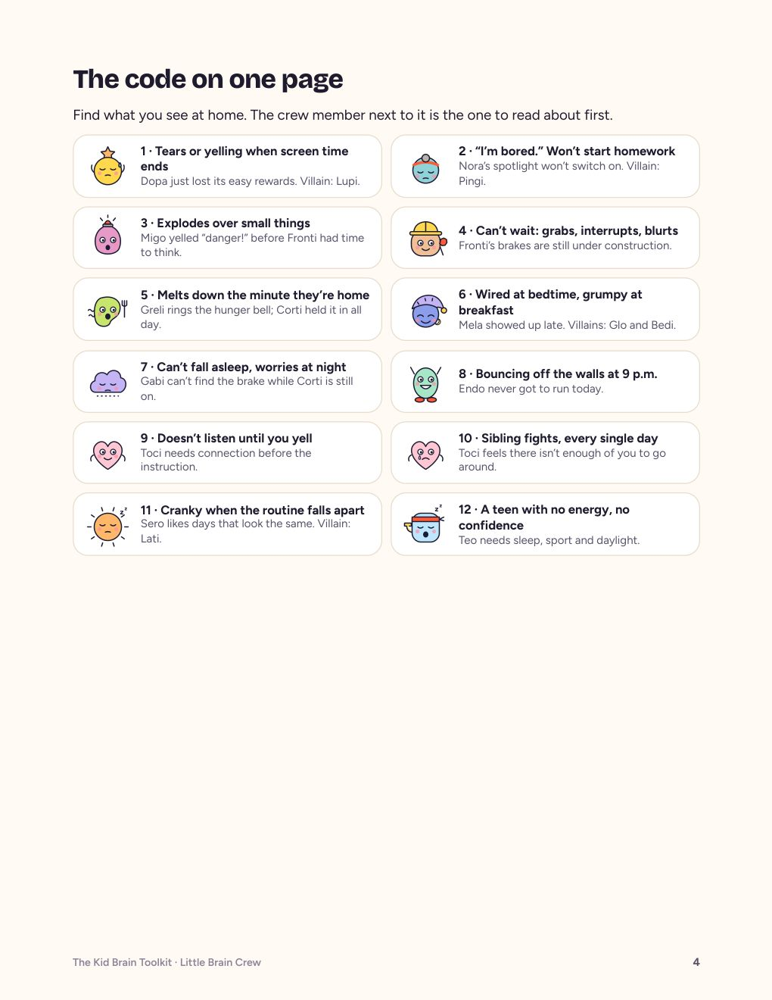
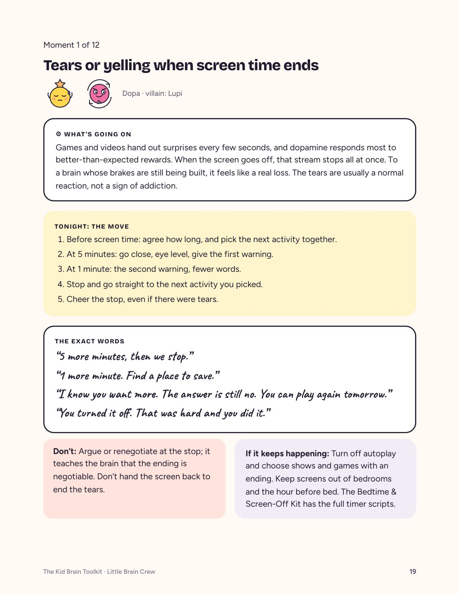
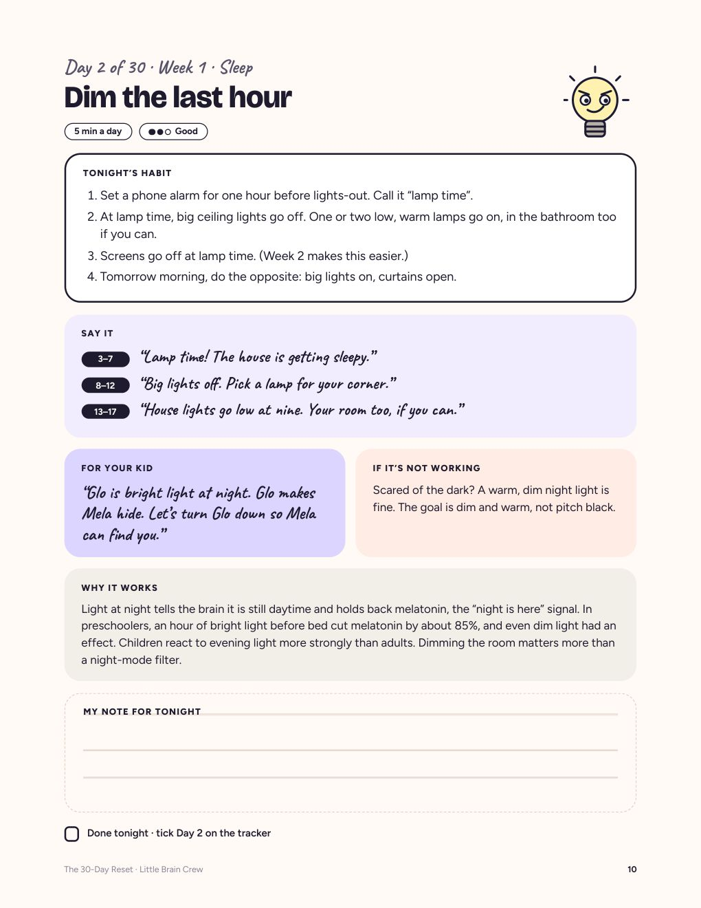
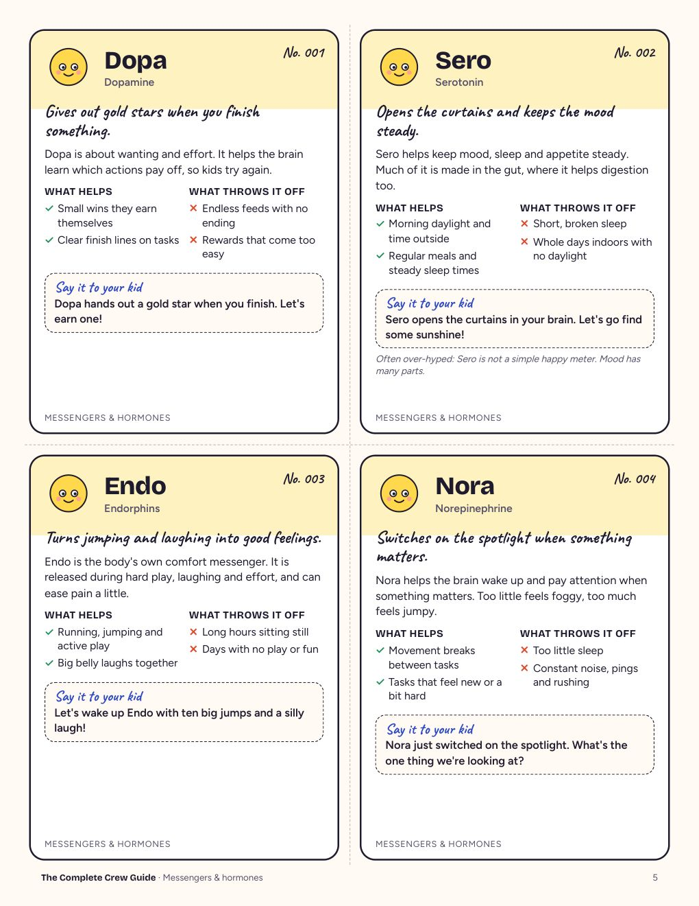
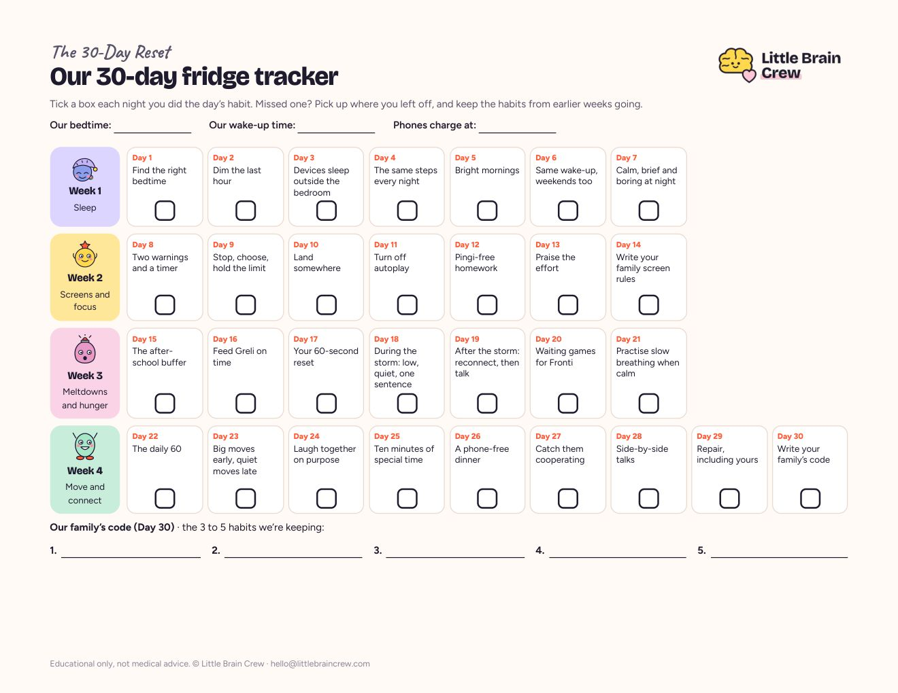
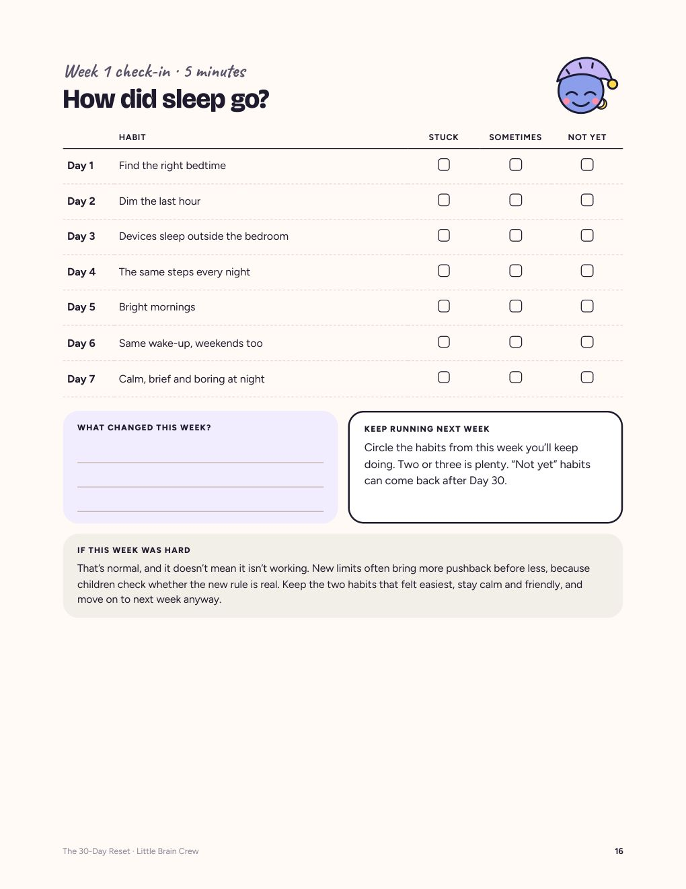
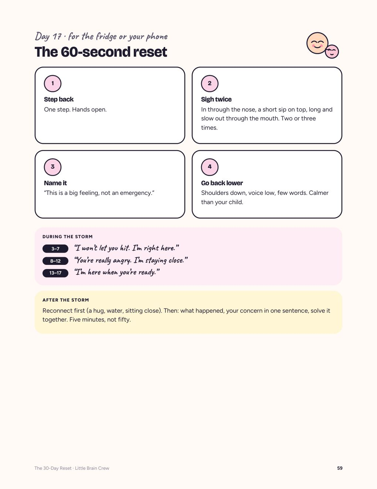

Know what’s really going on in your kid’s brain, and exactly what to say. Tonight.
Then change the evenings in 30 days, ten minutes at a time, with the words ready for your kid’s age. The Kid Brain Toolkit is everything we make in one download: the code to the 12 hardest moments, the 30-day plan, the science behind every habit, and all 214 crew members. For parents of kids 4–17. No yelling scripts, no bribes, no 300 pages of theory to get through first.
You’ve tried the timer. The warning. The calm voice.
Then the not-so-calm voice.
And then it’s 9:30 p.m., the house is finally quiet, and you’re scrolling for the one parenting tip that fits your kid. Tomorrow it starts again: the tablet, the homework, the 5 p.m. explosion, the bedtime that takes an hour.
Not a bad kid. Not bad parenting. The same few messengers, hormones and brain parts drive almost every hard moment at home, and a few habits get in their way. Once you can see who’s talking, you know what to try tonight, and what to say while it’s happening. That’s what the Toolkit gives you: the whole code, in one place, written for a tired parent, not for a lecture hall.
Start with the moment
you’re in.
Tap one. You get why it happens and one thing to try tonight, free. The Toolkit has the full page: what’s going on, the move, and the exact words.
- Tears or yelling when screen time endsDopa just lost its easy rewards. Villain: Lupi.What to try tonight →
- “I’m bored.” Won’t start homework or clean-up.Nora’s spotlight won’t switch on. Villain: Pingi.What to try tonight →
- Explodes over small thingsMigo yelled “danger!” before Fronti had time to think.What to try tonight →
- Can’t wait: grabs, interrupts, blurts it outFronti’s brakes are still under construction.What to try tonight →
- Melts down the minute they’re home from schoolGreli is ringing the hunger bell, and Corti held it in all day.What to try tonight →
- Wired at bedtime, grumpy at breakfastMela showed up late. Villains: Glo and Bedi.What to try tonight →
- Can’t fall asleep, worries at nightGabi can’t find the brake while Corti is still on.What to try tonight →
- Doesn’t listen until you yellToci needs a moment of connection before the instruction.What to try tonight →
- Sibling fights, every single dayToci feels there isn’t enough of you to go around.What to try tonight →
- Cranky all week when the routine falls apartSero likes days that look the same. Villain: Lati.What to try tonight →
All twelve are in Part 2 of the Toolkit, one page each (p. 19–30). Everything new that shows up later, from a 4:30 a.m. waker to a teen who stopped talking, has a card in the Complete Crew Guide.
Four books, one tracker, three printables.
One download.
Each piece is there to take one problem off your plate. Nothing to read cover to cover: you open the page for tonight.
- 1 · The Kid Brain Toolkit (43 pages)The code on one page (p. 4) sends you to the one page you need tonight. Twelve hard moments, one page each: what’s going on, the move for tonight, the exact words, the “don’t”. The six villains and what’s normal at every age, Whyzi (3–6) to Seki (14–17).
- 2 · The 30-Day Reset (61 pages)So the change sticks. One 10-minute habit a day: sleep first, then screens and focus, then meltdowns and hunger, then moving and connecting. Every day has the exact words three ways (3–7, 8–12, 13–17), a line for your kid, why it works, and what to do when it doesn’t. Four weekly check-ins and a 3-day mini reset for after a holiday.
- 3 · The fridge trackerAll 30 habits on one page. Tick a box each night; missed one, pick up where you left off. The whole family sees the streak.
- 4 · The teen track with TeoInside the Reset: four pages for ages 13–17, one per week. The later body clock, the phone, big feelings, and the words that work with a teen. No Dopa talk required.
- 5 · The Science Edition (67 pages)So you know why, not just what. The research behind every habit in 10 chapters, with a protocol for each age, and every claim marked by how sure the science is.
- 6 · The Complete Crew Guide (74 pages, all 214 crew members)So the next new thing doesn’t send you back to Google. Body odor at 11, a 4:30 a.m. waker, a teen who only talks when he wants something: find the crew member behind it in a minute. One card each: what it does, what helps, what throws it off, what to say to your kid.
- 7 · 24 “Say This, Not That” cardsFor when words fail you: the line to drop and the line to say. Printable.
- 8 · The 60-Second Meltdown PlanOne page for the fridge: what to do in the middle of a blow-up, step by step, before you say anything.
- 9 · The crew posterSo your kid learns the crew too, and “Dopa needs a warning” replaces the fight.
- 10 · Seven evenings of personal help, includedTry the 30-day plan for seven evenings. If it’s not working, email us your hardest moment and a person writes you a short plan.
Until today, the Toolkit was $19 and the 30-Day Reset was $39 on its own. Now both, plus the Science Edition, plus all 214 crew members, are one download.
About 63¢ a day for the 30 days, then yours forever. Less than the pizza you order on the night it all goes wrong.
Get the Toolkit · $19Get my Toolkit · $19
At checkout you can add the Bedtime & Screen-Off Kit for $7: seven calmer evenings, the timer scripts and a bedtime story. Optional.
Real pages, not a mockup.
We don’t have reviews yet and we don’t do refunds on digital files, so here are the pages themselves. Decide on the format, not on a promise.




- “5 more minutes, then we stop.”Toolkit p. 19 · the first warning, up close and at eye level
- “You’re angry, and the answer is still no.”Toolkit p. 21 · name the feeling, hold the limit
- “Lamp time! The house is getting sleepy.”Reset Day 2 · the words for a 3–7 year old
Tonight. This week. Day 30.
- Tonight, 10 minutes. Open the Toolkit on page 4, find the moment that’s hardest at your house, read its page. You go into tomorrow’s hard moment knowing what’s going on and what to say.
- This week, 15 minutes to set up. Day 0 of the Reset: print the tracker, score your evenings on the scorecard, pick a start day. Then one habit a day, ten minutes, sleep first because everything else is easier with a rested kid.
- Day 30. Score your evenings again and compare with Day 0. Write your family’s code: the three to five habits that made the difference. Keep those, drop the rest. The Crew Guide stays on your phone for whatever comes next.
Your own before and after, in your own home.
On Day 0 you score eight lines from 1 to 5: screen time ends without a fight, bedtime happens on time, and six more. On Day 30 you score them again. We don’t promise a calmer kid. We give you the plan, the words, and a way to see what changed at your house.



Two rules behind every page.
The brain changes from what’s repeated.
Every bedtime at the same time and every screen ending done the same way carves the path a little deeper. Scientists call it neuroplasticity, and it’s strongest in childhood. That’s why one small habit, repeated, beats one big talk.
Kids borrow your calm before they can make their own.
A calm grown-up close by helps a child’s body settle. Scientists call it co-regulation. Your kid learns to calm down by doing it with you, hundreds of times. That’s why every page gives you the words, not just the rule.
Built on pediatric and sleep guidelines and published research on sleep, light, movement, screens, food and closeness. Every “what helps” is marked strong, good or early. We keep every claim no bigger than the study behind it, and we explain behavior, we don’t diagnose it.
Two ways to get the code.
Everything, in one download. Tonight.
The code to the 12 moments, the 30-day plan, the science and all 214 crew members. You read the page for the moment you’re in, and you run the plan at your own pace.
Get the Toolkit · $19The same code, applied to your house, by a person.
Tell us about your kid and the one moment that keeps going wrong. Within 3 working days a person writes your plan: the crew member behind it, one move for each evening, the exact words for your kid’s age.
How the Personal plan works →This is for you if…
- One or two hard moments keep repeating at your house
- You want to know what to say, not read a parenting philosophy
- You can give it ten minutes tonight, and ten minutes a day for a month
- You’d like your kid to understand what’s going on, too
It’s not for you if…
- You’re looking for a diagnosis or a pill. We don’t do either.
- Something about your child’s health worries you. Call your pediatrician first.
- You want a promise that one page changes everything. We don’t make promises about your child.
Questions before you buy
Four books? I don’t have time for one.
You don’t read them. You open page 4 of the Toolkit, find your moment, and read one page. The Reset is one page a day. The Science Edition and the Crew Guide are for the night you want to know why, or the day something new shows up. Nothing here is a cover-to-cover assignment.
What exactly am I buying?
Four PDFs (the real pages are above): the 43-page Toolkit, the 61-page 30-Day Reset, the 67-page Science Edition and the 74-page Complete Crew Guide. Plus the one-page fridge tracker and three printables: the 24 “Say This, Not That” cards, the 60-Second Meltdown Plan and the crew poster. Your download links land in your inbox within a minute of paying, all of them in the same email.
Why is everything $19?
Because the whole point is that you use it tonight, not that you think about it for a week. The Toolkit and the Reset used to be sold apart ($19 and $39). One download, one price, and the Personal plan is there for parents who want it written for them.
Do I need a printer?
No. Everything reads on a phone, tablet or computer. The fridge tracker is the one page we’d print; the cards, the meltdown plan and the poster are there if you want them on the fridge.
My kid is 4. My kid is 15. Is it for both?
Every moment page and every Reset day has the words for 3–7, 8–12 and 13–17, Part 4 of the Toolkit says what’s normal at each age, and the teen track with Teo is four pages written for 13–17. The Crew Guide covers growing up from first signs to the teen years. It’s educational, not care for one child: if you want it written for your family, that’s the Personal plan.
Is it a subscription?
No. $19 once, yours to keep. Nothing renews, and there is nothing to cancel.
What if it’s not working for my family?
Try the 30-day plan for seven evenings. If it’s not working, email us your hardest moment and a person writes you a short plan. Included.
Can I get a refund?
You get instant access to digital files, so all sales are final (see our Terms). That’s why the real pages are on this page: you can see the format before you decide. If a link or file won’t open, email us and we’ll fix it.
I already bought the Toolkit or the Reset. Do I get the rest?
Yes. If you bought on or after 2 November, the download link in your receipt now opens everything: the Reset, the Science Edition, the Crew Guide and the bonuses. Bought earlier? Email us and we’ll send you the rest.
Is this medical advice?
No. It’s learning for parents, built on everyday habits. We don’t diagnose, treat or promise results. If something worries you, your pediatrician is the right first call.
You don’t have to figure out everything tonight.
Start with one hard moment. Page 4 is waiting, and the next 30 days are planned.
Get the Toolkit · $19 Get my Toolkit · $19Instant download · one payment · seven evenings of personal help included · educational only, not medical advice